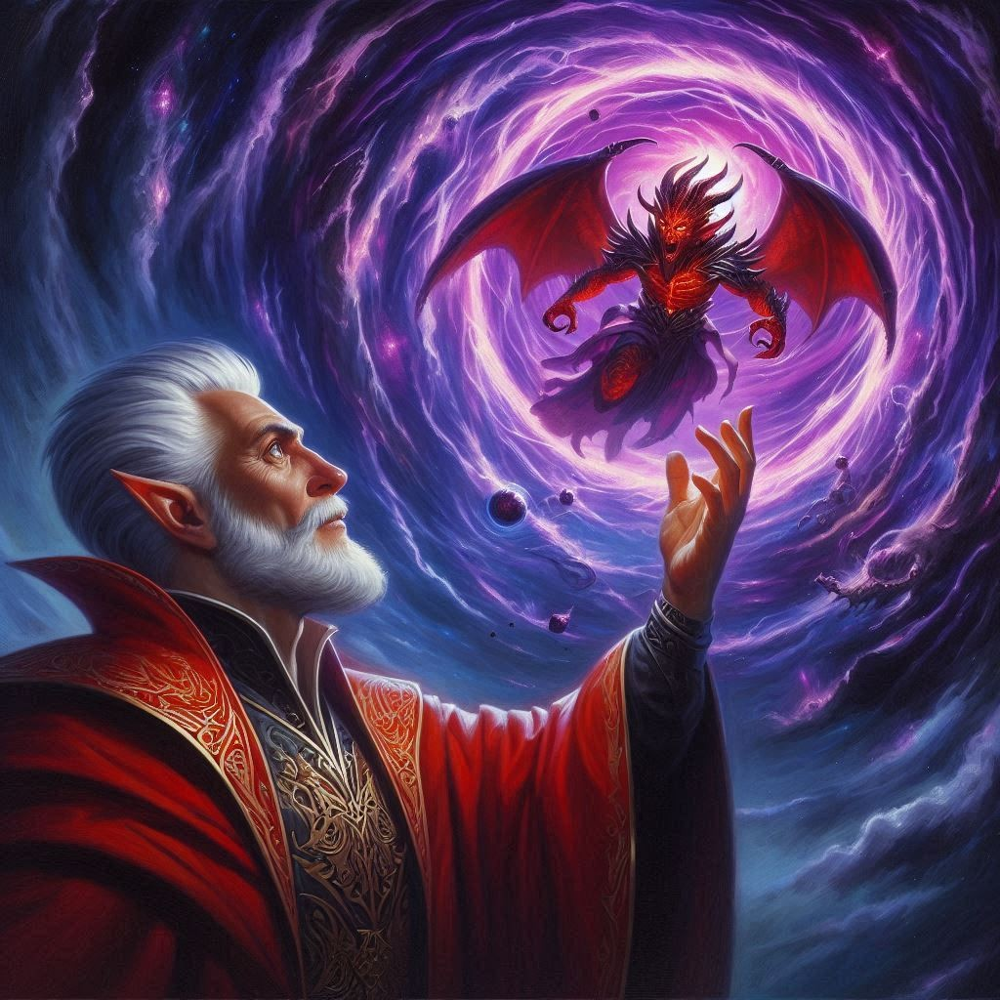
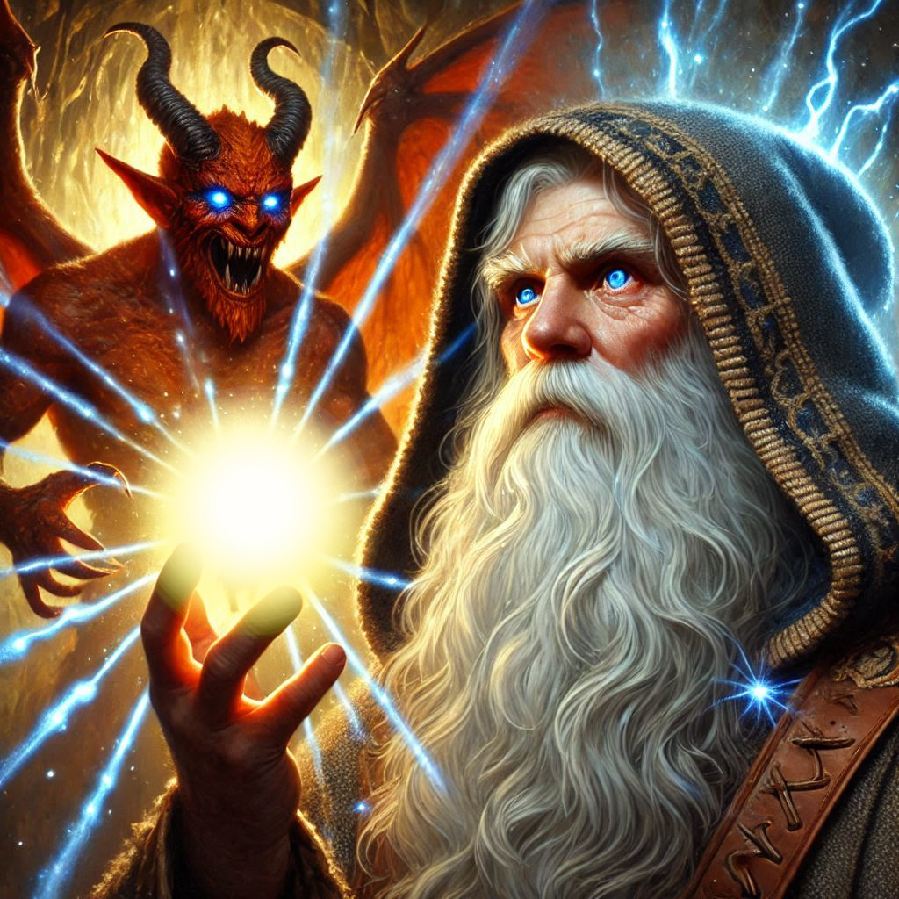

Onyx the Redeemer
You smash the lock to the goblin’s cell and the iron door creaks open noisily.
“Archons! You’ll wake the whole city of dark elves!” Jorsh shoots you a withering look as the goblin scurries out of the cell and slinks into the shadows before you can reply.
“I need to rescue Onyx,” you say. “I can feel something deep inside calling me toward the old dwarf,” you explain, looking at Jorsh apologetically.
“Suit yourself,” Jorsh sighs. “I’m not going to drag with me kicking and screaming the whole way.” You watch Jorsh, cloaked in shadows and dark magic, as he marches through the bleak halls of Umbra'Thal. His every step pulses with the dangerous energy he’s gained, but his face carries a grim, hollow determination. You know it’s a suicide mission, even if he refuses to admit it. His obsession with stopping Varis, with saving this twisted world from the dark elf's dominion, will consume him. And part of you aches to follow—to see if he truly can be saved from himself. But another part, the ranger in you, knows where your duty lies.
Jorsh will face Varis, but Onyx needs you now.
Without another word, you slip away from Jorsh's side, disappearing into the shadows of the labyrinthine city as you follow the goblin’s almost invisible trail. Umbra'Thal’s architecture is an alien thing, cold and oppressive, every wall steeped in the ancient magic of the Shadow Realm. You move swiftly, guided by a sense of urgency and the deep pull of something greater. Onyx—your father’s estranged friend, the village’s mysterious elder—had been taken by Varis to serve as a sacrificial pawn. You can’t let that happen. If the demon Yaldaboath is unleashed, there will be no turning back.
The prison chamber is hidden deep beneath Umbra'Thal’s black stone towers, guarded by dark elf sentinels. You dispatch them quickly, your blades silent and sure, your ranger instincts heightened in the eerie stillness of this cursed city. And then, you find him—Onyx, bound by glowing chains, his strength fading but his spirit unbroken. His old eyes meet yours with a knowing gaze, as if he had been expecting you.
“I told you the half elf was following me,” Shamrel grunts triumphantly as you emerge around the corner.
“Onyx!” you cry.

"You're late," he mutters, though his lips curl into a small smile.
"Onyx," you whisper, kneeling beside him, frantically working to break his bonds. "We need to get out of here. Jorsh is going after Varis, but he—he won’t survive this. Neither will you if we don’t move."
Onyx’s gaze softens, but there is a gravity in his expression that you’ve never seen before. "Kira," he says quietly, his voice steady. "There’s something you don’t know. I am not just Onyx the elder. I am Adonais, the Archon of Light, bound by mortal flesh."
The weight of his words crashes down on you like a tidal wave. Archon of Light? Onyx? But there’s no time to question, no time to unravel the mysteries of his past. You’ve felt the rising dread in Umbra'Thal since you arrived. The only thing that matters now is stopping Yaldaboath before it’s too late.
“We have to go,” you insist, your mind racing. “Jorsh is trying to stop Varis from summoning Yaldaboath, but—”
Onyx shakes his head, interrupting you with calm certainty. "It’s not Jorsh who will stop him. It’s me." He looks at you with a finality that tightens your chest. “I was always meant to return to this place, Kira. To end it.”
Before you can protest, a deafening rumble shakes the chamber, and you hear the roars of battle echoing from above. Varis and Jorsh have begun their fight. You see the flames of dark magic flash through cracks in the ceiling, and your heart tightens. There’s no time.
"Come," Onyx commands, his voice filled with the ancient power of his true self. "We must go to the inner sanctum. Yaldaboath must be stopped at the source."
The two of you make your way through the winding tunnels of Umbra'Thal, the sound of Jorsh and Varis’s battle growing louder with each step. When you reach the sanctum, you see it—a grand, black altar where Varis stands, his form shifting between man and dark elf, dark mana swirling around him. Jorsh is there too, locked in combat, his eyes burning with the fury of vengeance.
But you feel it—the summoning. Yaldaboath stirs, the dark god’s presence slowly seeping through the air, growing stronger by the second.
“No!” you shout, but it’s too late. The portal begins to tear open above the altar, a gateway of shadows. Varis raises his hands, ready to unleash Yaldaboath, but Jorsh hurls himself forward, using the last of his strength to hold the dark elf back.
Onyx steps forward, his form glowing with a celestial light that makes the shadows recoil. He raises his hands, and suddenly the room is filled with radiant energy, casting Varis and Jorsh into sharp contrast. The demon’s essence, still halfway through the portal, recoils at the presence of the Archon.
“Yaldaboath!” Onyx’s voice booms through the chamber. “You will not take this realm!”
The demon’s form twists and writhes, realizing too late that its chosen sacrifice—Onyx—is not an ordinary mortal, but the Archon of Light. With a cry that shakes the very foundation of Umbra'Thal, Yaldaboath lunges forward, but Onyx steps into the portal.
“No!” you scream, reaching out, but you know what must be done. Onyx’s body dissolves into light as he enters the gateway, his sacrifice sealing the portal from within. Yaldaboath’s screech of rage is cut short as the portal closes, forever locking the demon in the abyss.
The room falls silent. Varis is dead, his body disintegrated by Onyx’s divine light. Jorsh collapses, spent from the battle, and you rush to his side. He looks up at you with hollow eyes, the darkness that once filled him now gone.
"Onyx... is gone?" he whispers.
You nod, your throat tight. “He sacrificed himself to stop Yaldaboath.”
Jorsh gives a weak nod. “Then... it’s over.”
For the first time, you believe him. The curse is broken. The portal is sealed forever. But as you stand amidst the ruins of Umbra'Thal, you realize that your journey has only just begun.